EST. 2007 · HOMS, SYRIA
نبني بثقة.
نبني بثقة.
وننفّذ بدقة.
شركة مقاولات عامة متخصصة في الأبنية والطرق والبنية التحتية والأعمال الصناعية، مدعومة بكوادر هندسية وآليات تنفيذ متكاملة.
01 · COMPANY
خبرة تنفيذية
خبرة تنفيذية
من الميدان.
تأسست شركة الفجر للمقاولات في تموز 2007، وتعمل في تنفيذ المشاريع الإنشائية والسكنية والطرقية والخدمية. تعتمد الشركة على كوادر هندسية وفنية متخصصة، وعلى آليات ومعدات حديثة لتنفيذ الأعمال ضمن متطلبات الجودة والبرنامج الزمني.
هدفنا إقامة علاقات مهنية ممتازة، وتقديم خدمات بأعلى درجات الأداء والسرعة في التنفيذ.
الإدارة
أديب الفجر
أديب الفجر
خبرة إدارية وهندسية
إدارة مشاريع، تخطيط، إشراف وتنفيذ منظم ضمن فرق متخصصة.
OUR MISSION
هدف الشركة
تسعى شركة الفجر للمقاولات إلى تحقيق الريادة في مجال المقاولات من خلال التنفيذ السريع للمشاريع، وضمان أعلى مستويات الجودة وفق المواصفات الفنية المطلوبة، والالتزام بالدقة والاحترافية، والاعتماد على كوادر هندسية وفنية ذات خبرة وكفاءة عالية، بما يحقق رضا العملاء ويساهم في دعم مشاريع التنمية والإعمار.
02 · SERVICES
خدمات واضحة.
خدمات واضحة.
تنفيذ متكامل.
الأبنية والمنشآت
تنفيذ المجمعات السكنية والمدارس والأبنية الإدارية والخدمية.
الطرق والإسفلت
فتح وتسوية وتأهيل الطرق، القشط، الفرش، الحدل والتزفيت.
البنية التحتية
شبكات المياه والصرف والخدمات العامة والأعمال المدنية المرافقة.
الأعمال الصناعية
محطات الإسفلت والبيتون والأعمال الميكانيكية والكهربائية المرتبطة.
إدارة المشاريع
تخطيط، جدولة، ضبط جودة، إدارة مخاطر ومتابعة مالية وفنية.
الاستشارات الهندسية
دراسة المشاريع والإشراف وتقديم الرأي الفني المتخصص.
FAQ
الأسئلة الشائعة
ما هي المجالات التي تعمل بها شركة الفجر؟
تعمل الشركة في تنفيذ مشاريع الطرق والبنية التحتية والمنشآت والأعمال الصناعية والمشاريع المرتبطة بقطاع المقاولات.
هل تنفذ الشركة مشاريع للقطاعين العام والخاص؟
نعم، تمتلك الشركة خبرة في تنفيذ مشاريع متنوعة والتعاون مع جهات مختلفة وفق متطلبات كل مشروع.
كيف يمكن طلب عرض أو التواصل بخصوص مشروع؟
يمكن التواصل مباشرة مع الشركة عبر أرقام الاتصال أو واتساب الموجودة في قسم التواصل.
هل يمكن الاطلاع على المشاريع السابقة للشركة؟
نعم، يعرض الموقع مجموعة من المشاريع والأعمال التي قامت الشركة بتنفيذها في مجالات متعددة.
03 · FLEET
أسطول جاهز
أسطول جاهز
للتنفيذ.
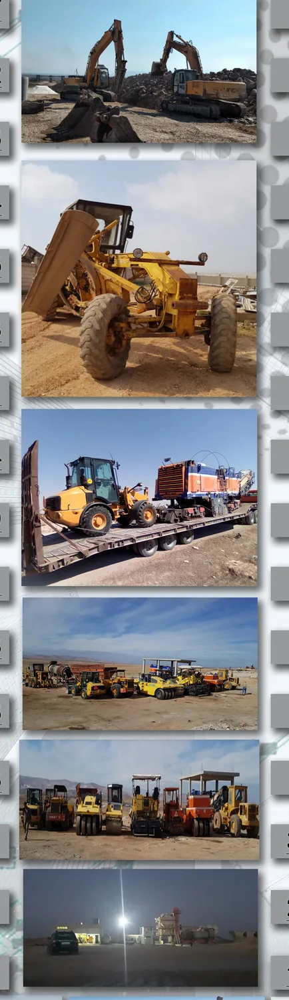
04 · PROJECTS
مشاريع على الأرض.
مشاريع على الأرض.
نتائج قابلة للرؤية.
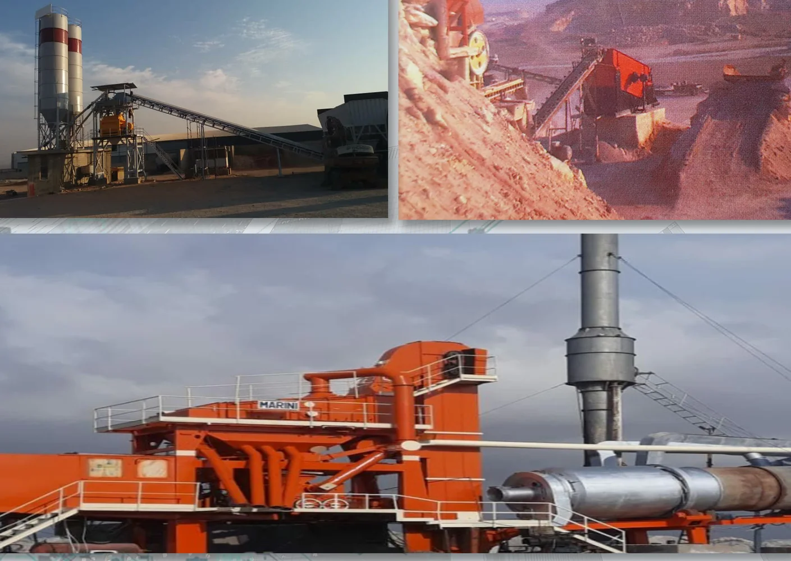
INDUSTRIAL
محطات خلط وإنتاج الإسفلت
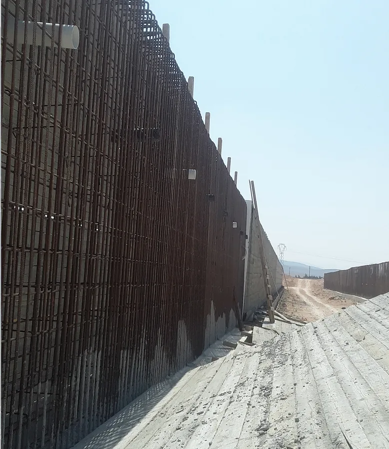
STRUCTURES
أعمال الأساسات والجدران الاستنادية
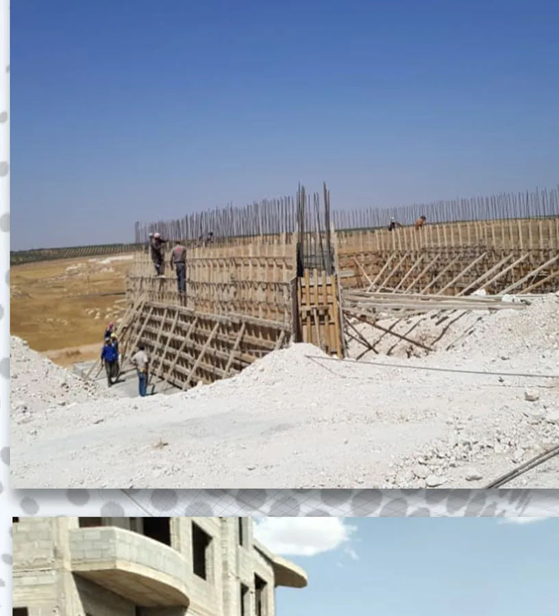
BUILDINGS
مشاريع سكنية وخدمية
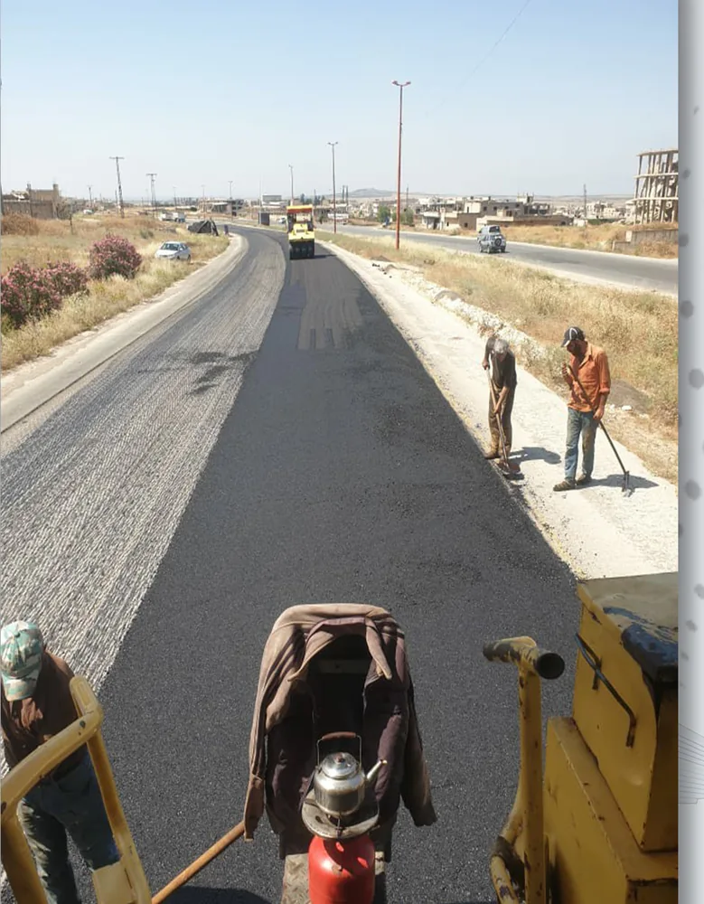
ROADS
تنفيذ وتأهيل الطرق
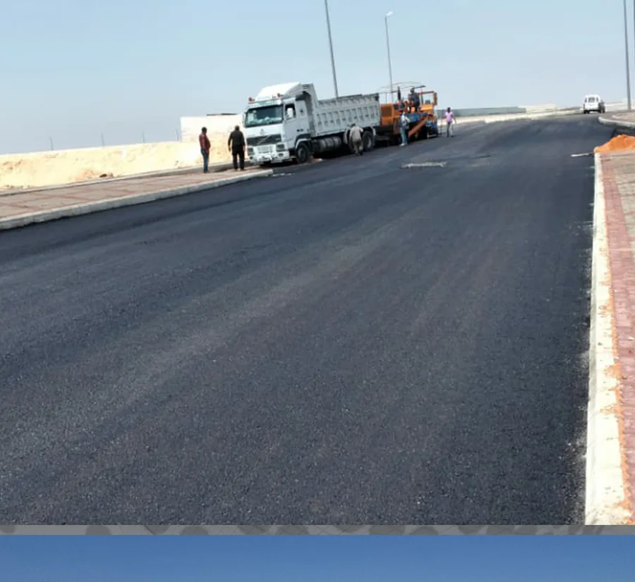
ASPHALT
فرش وحدل الطبقات الإسفلتية
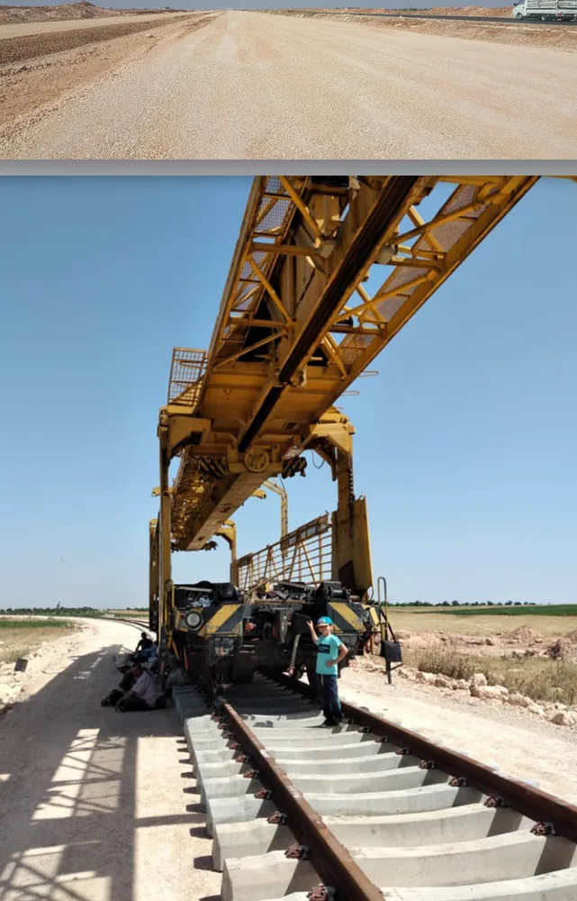
RAIL
أعمال السكك والمنشآت المرافقة
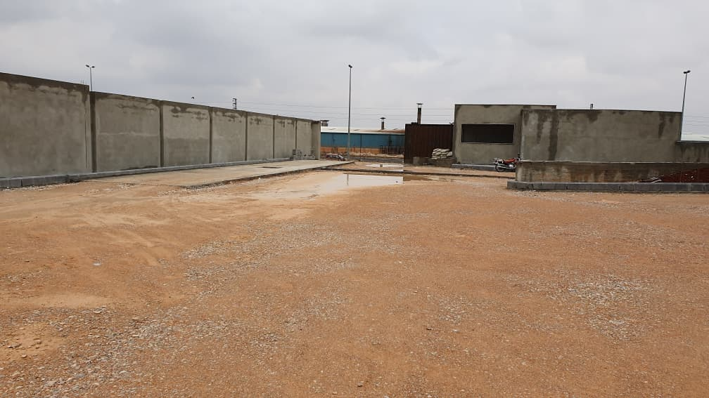
EARTHWORKS
أعمال تهيئة وتجهيز الساحات
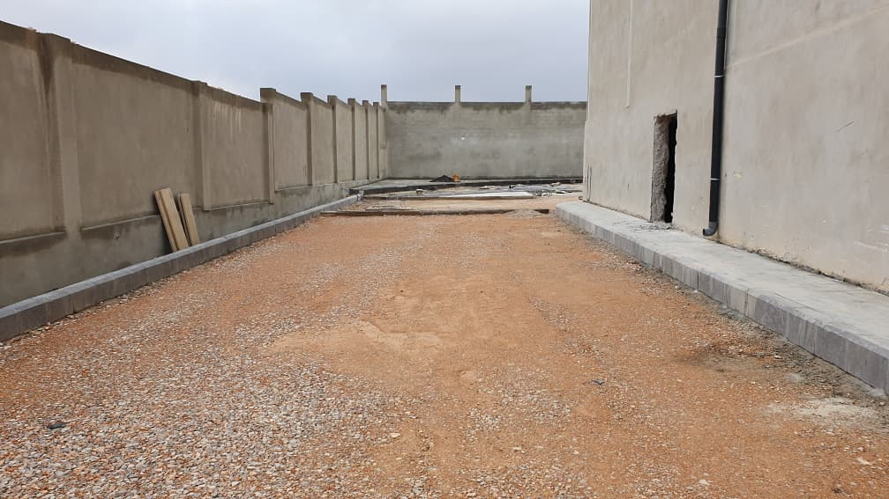
ROAD WORKS
تنفيذ وتجهيز الطرق الداخلية
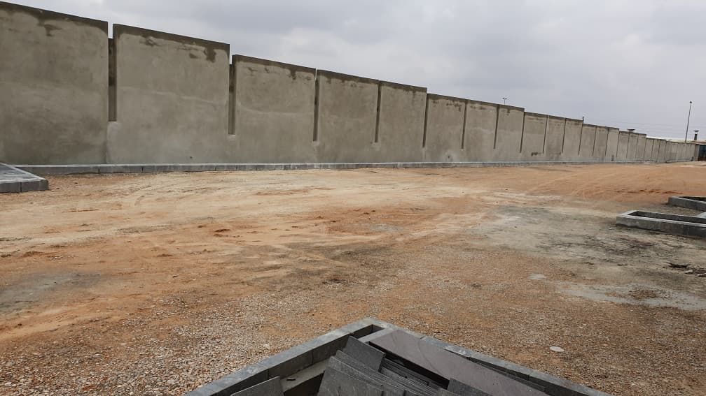
SITE PREPARATION
أعمال التسوية وتجهيز المواقع
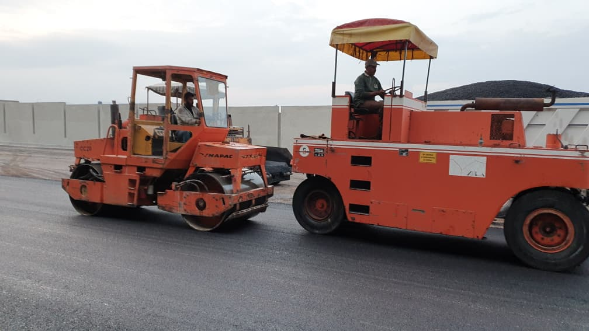
COMPACTION
أعمال الحدل وتجهيز طبقات الطرق
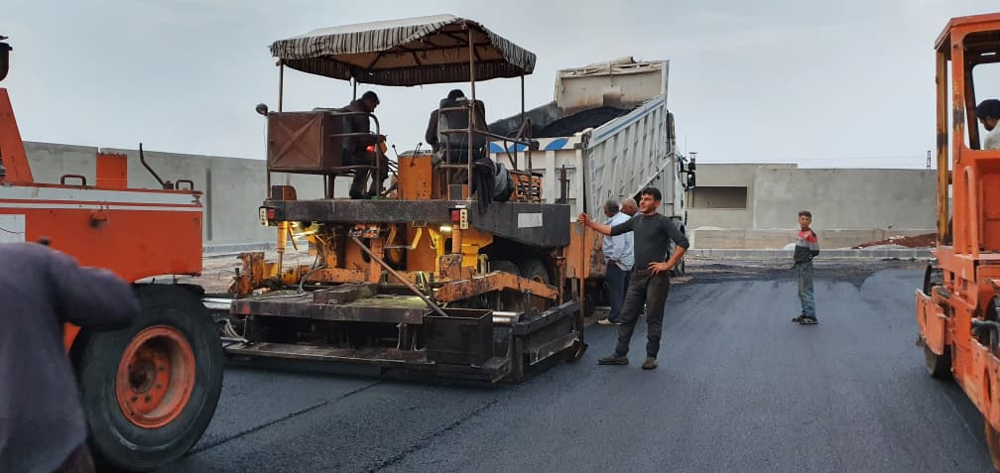
ASPHALT PAVING
تنفيذ وفرش الخلطة الإسفلتية
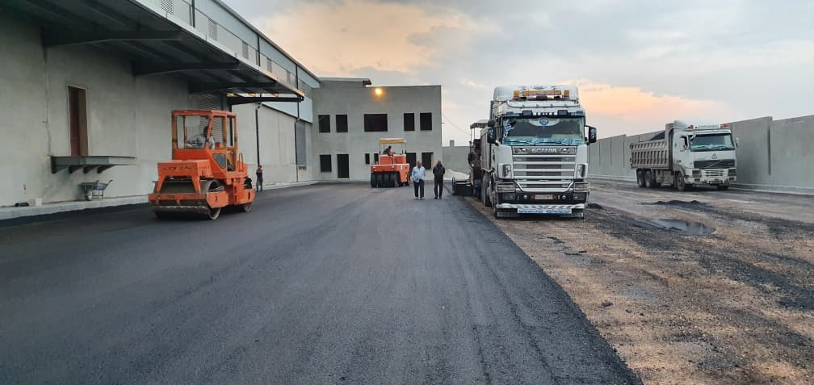
INDUSTRIAL ROADS
تنفيذ الطرق ضمن المنشآت الصناعية
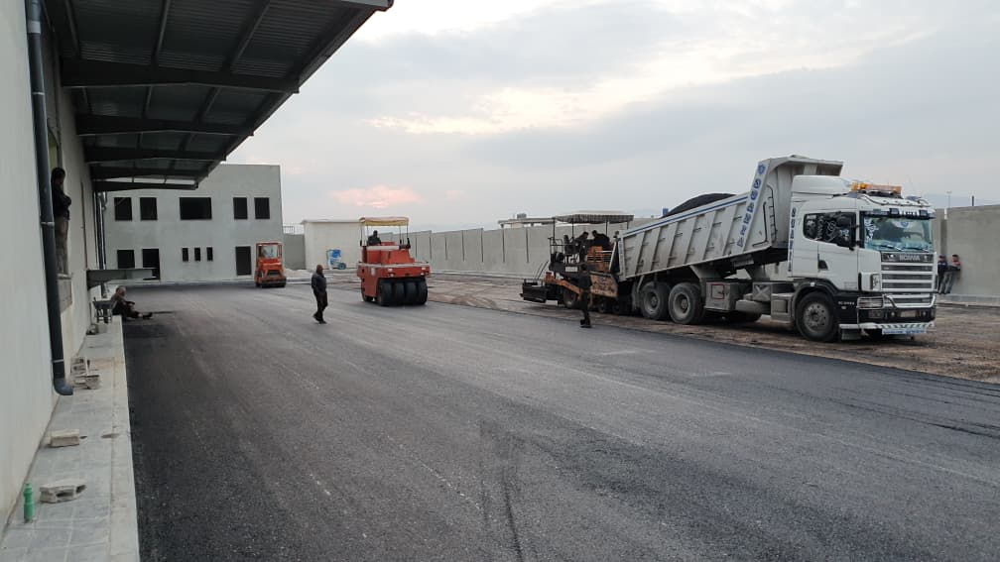
INFRASTRUCTURE
أعمال البنية التحتية والساحات الصناعية
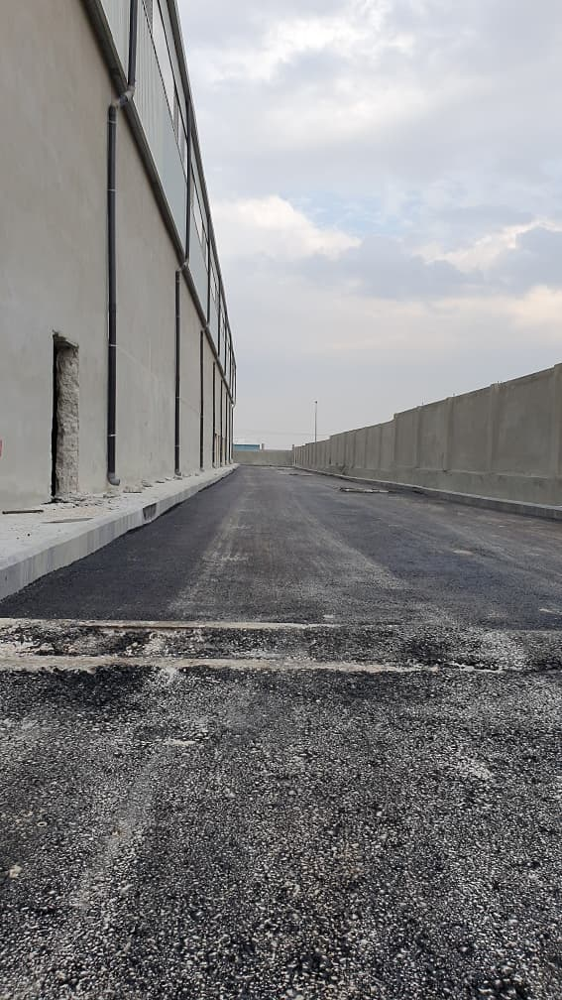
ACCESS ROAD
تنفيذ وتأهيل طرق الوصول
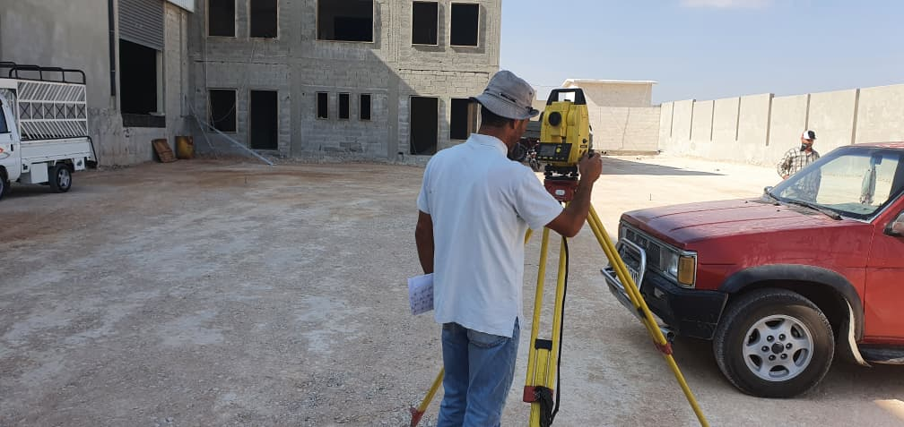
SURVEYING
أعمال الرفع والتوقيع المساحي
HIGHWAYS
تأهيل طريق تدمر

ROAD REHABILITATION
تأهيل الطرق في مدينة مصياف

ASPHALT WORKS
تنفيذ أعمال فرش الإسفلت على الكورنيش
MAJOR PROJECTS
أبرز المشاريع المنفذة
- مشروع محطة قطارات حسياء لصالح المؤسسة العامة للخطوط الحديدية
- الضاحية السكنية في دير عطية – ريف دمشق
- سدود التجميع في وادي الأبيض وآرك – تدمر
- المراكز الجمركية الجاهزة في تدمر والقصير ودير الزور
- مشروع خط غاز شاعر
- أوتستراد الخنساء – شين – مشتى الحلو
- إعادة تأهيل أوتستراد حمص – دمشق
- إعادة تأهيل أوتستراد حمص – طرطوس
- إعادة تأهيل أوتستراد مصياف – القدموس
- مشاريع الطرق والبنية التحتية في عدد من المحافظات والبلديات السورية
05 · TEAM
فريق متخصص.
فريق متخصص.
هيكل واضح.
06 · CONTACT
لنبدأ المشروع
لنبدأ المشروع
من خطوة واضحة.
المقر الرئيسي: مدينة حمص، قرب دوار الثامن من آذار. فرع: حمص — حسياء.